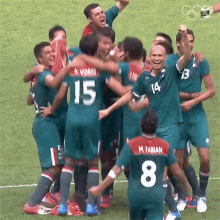

Mexico
Selección de Mexico: Historial Mundialista

- Participaciones: 17 veces (incluyendo 2022).
- Mejor Resultado: Cuartos de final en México 1970 y México 1986.
- Sedes: México ha organizado el torneo en 1970, 1986 y será sede conjunta en 2026.
- Participación 2022: Eliminado en fase de grupos.
- Récord: Es una de las selecciones con más partidos disputados, pero también una de las más derrotadas